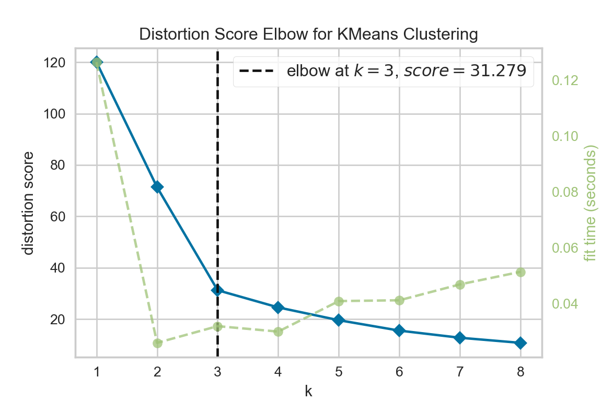

import matplotlib.pyplot as plt
from sklearn import preprocessing
from sklearn.cluster import KMeans
from sklearn.metrics import silhouette_score
import pandas as pd
from yellowbrick.cluster import KElbowVisualizer
from yellowbrick.cluster import SilhouetteVisualizershopping_original=pd.read_csv('./data/Shopping_Data.csv')
# Examine data
shopping_original.head()## CaseNo V1 V2 V3 V4 V5 V6
## 0 1 6 4 7 3 2 3
## 1 2 2 3 1 4 5 4
## 2 3 7 2 6 4 1 3
## 3 4 4 6 4 5 3 6
## 4 5 1 3 2 2 6 4shopping_original## CaseNo V1 V2 V3 V4 V5 V6
## 0 1 6 4 7 3 2 3
## 1 2 2 3 1 4 5 4
## 2 3 7 2 6 4 1 3
## 3 4 4 6 4 5 3 6
## 4 5 1 3 2 2 6 4
## 5 6 6 4 6 3 3 4
## 6 7 5 3 6 3 3 4
## 7 8 7 3 7 4 1 4
## 8 9 2 4 3 3 6 3
## 9 10 3 5 3 6 4 6
## 10 11 1 3 2 3 5 3
## 11 12 5 4 5 4 2 4
## 12 13 2 2 1 5 4 4
## 13 14 4 6 4 6 4 7
## 14 15 6 5 4 2 1 4
## 15 16 3 5 4 6 4 7
## 16 17 4 4 7 2 2 5
## 17 18 3 7 2 6 4 3
## 18 19 4 6 3 7 2 7
## 19 20 2 3 2 4 7 2shopping_df = shopping_original.drop(columns="CaseNo")
shopping_df## V1 V2 V3 V4 V5 V6
## 0 6 4 7 3 2 3
## 1 2 3 1 4 5 4
## 2 7 2 6 4 1 3
## 3 4 6 4 5 3 6
## 4 1 3 2 2 6 4
## 5 6 4 6 3 3 4
## 6 5 3 6 3 3 4
## 7 7 3 7 4 1 4
## 8 2 4 3 3 6 3
## 9 3 5 3 6 4 6
## 10 1 3 2 3 5 3
## 11 5 4 5 4 2 4
## 12 2 2 1 5 4 4
## 13 4 6 4 6 4 7
## 14 6 5 4 2 1 4
## 15 3 5 4 6 4 7
## 16 4 4 7 2 2 5
## 17 3 7 2 6 4 3
## 18 4 6 3 7 2 7
## 19 2 3 2 4 7 2scaler = preprocessing.StandardScaler().fit(shopping_df)
scaler
#Z-transform
## StandardScaler()shopping_df_scaled = pd.DataFrame(scaler.fit_transform(shopping_df), columns=shopping_df.columns, index=shopping_df.index)
shopping_df_scaled## V1 V2 V3 V4 V5 V6
## 0 1.161314 -0.072739 1.554929 -0.743311 -0.844581 -0.925548
## 1 -0.999270 -0.800132 -1.503948 -0.067574 0.902828 -0.239957
## 2 1.701460 -1.527525 1.045116 -0.067574 -1.427050 -0.925548
## 3 0.081022 1.382047 0.025491 0.608164 -0.262111 1.131225
## 4 -1.539416 -0.800132 -0.994135 -1.419048 1.485297 -0.239957
## 5 1.161314 -0.072739 1.045116 -0.743311 -0.262111 -0.239957
## 6 0.621168 -0.800132 1.045116 -0.743311 -0.262111 -0.239957
## 7 1.701460 -0.800132 1.554929 -0.067574 -1.427050 -0.239957
## 8 -0.999270 -0.072739 -0.484322 -0.743311 1.485297 -0.925548
## 9 -0.459124 0.654654 -0.484322 1.283901 0.320358 1.131225
## 10 -1.539416 -0.800132 -0.994135 -0.743311 0.902828 -0.925548
## 11 0.621168 -0.072739 0.535303 -0.067574 -0.844581 -0.239957
## 12 -0.999270 -1.527525 -1.503948 0.608164 0.320358 -0.239957
## 13 0.081022 1.382047 0.025491 1.283901 0.320358 1.816817
## 14 1.161314 0.654654 0.025491 -1.419048 -1.427050 -0.239957
## 15 -0.459124 0.654654 0.025491 1.283901 0.320358 1.816817
## 16 0.081022 -0.072739 1.554929 -1.419048 -0.844581 0.445634
## 17 -0.459124 2.109440 -0.994135 1.283901 0.320358 -0.925548
## 18 0.081022 1.382047 -0.484322 1.959638 -0.844581 1.816817
## 19 -0.999270 -0.800132 -0.994135 -0.067574 2.067766 -1.611139#Elbow with default libs
cluster_range = range(1, 10)
cluster_errors = []
for num_clusters in cluster_range:
clusters=KMeans(num_clusters)
clusters.fit(shopping_df_scaled)
cluster_errors.append(clusters.inertia_)
## KMeans(n_clusters=1)
## KMeans(n_clusters=2)
## KMeans(n_clusters=3)
## KMeans(n_clusters=4)
## KMeans(n_clusters=5)
## KMeans(n_clusters=6)
## KMeans(n_clusters=7)
## KMeans()
## KMeans(n_clusters=9)plt.figure(figsize=(6,4))
plt.plot(cluster_range,cluster_errors,marker="o")
plt.show()#https://scikit-learn.org/stable/auto_examples/cluster/plot_kmeans_silhouette_analysis.html
#Silhouette scores from library
range_n_clusters = range(2, 10)
for n_clusters in range_n_clusters:
# Initialize the clusterer with n_clusters value and a random generator
# seed of 10 for reproducibility.
clusterer = KMeans(n_clusters=n_clusters, random_state=10)
cluster_labels = clusterer.fit_predict(shopping_df_scaled)
# The silhouette_score gives the average value for all the samples.
# This gives a perspective into the density and separation of the formed
# clusters
silhouette_avg = silhouette_score(shopping_df_scaled, cluster_labels)
#Choose the one with the highest sil score
print("For n_clusters =", n_clusters,
"The average silhouette_score is :", silhouette_avg)## For n_clusters = 2 The average silhouette_score is : 0.36837140169996013
## For n_clusters = 3 The average silhouette_score is : 0.5268850411661666
## For n_clusters = 4 The average silhouette_score is : 0.4999970773496992
## For n_clusters = 5 The average silhouette_score is : 0.40768358335059157
## For n_clusters = 6 The average silhouette_score is : 0.34160652631472255
## For n_clusters = 7 The average silhouette_score is : 0.33008836943588704
## For n_clusters = 8 The average silhouette_score is : 0.31849311650374795
## For n_clusters = 9 The average silhouette_score is : 0.3020347306222007#Elbow with YellowBrick
#https://www.scikit-yb.org/en/latest/api/cluster/elbow.html
model = KMeans(random_state=10) # seed
visualizer = KElbowVisualizer(model, k=(1,9))
visualizer.fit(shopping_df_scaled) # Fit the data to the visualizer## KElbowVisualizer(ax=<AxesSubplot:>, estimator=KMeans(random_state=10), k=None)
##
## E:\Users\User\anaconda3\lib\site-packages\sklearn\base.py:213: FutureWarning: From version 0.24, get_params will raise an AttributeError if a parameter cannot be retrieved as an instance attribute. Previously it would return None.
## FutureWarning)visualizer.show() # Finalize and render the figure
#Future warnng due tO Yellowbrick and sckit versions
#Sil with Yellow Brick
model = KMeans(random_state=10) # seed
visualizer = SilhouetteVisualizer(model,colors='yellowbrick')
visualizer.fit(shopping_df_scaled) # Fit the data to the visualizer## SilhouetteVisualizer(ax=<AxesSubplot:>, colors='yellowbrick',
## estimator=KMeans(random_state=10))visualizer.show()
#https://scikit-learn.org/stable/modules/generated/sklearn.cluster.KMeans.htmlk=3
model=KMeans(n_clusters=k,random_state=10).fit(shopping_df_scaled)
print(model)## KMeans(n_clusters=3, random_state=10)print(model.labels_)## [0 1 0 2 1 0 0 0 1 2 1 0 1 2 0 2 0 2 2 1]centroids=model.cluster_centers_
#Profile the clusters# based on the centroids
# Cluster 1 loads on V1 and V3
# Cluster 2 loads on V5
# Cluster 3 loads on V2,V4 and V6
print(centroids)## [[ 1.02627765 -0.34551166 1.04511612 -0.65884394 -0.91738926 -0.32565581]
## [-1.17931905 -0.80013226 -1.07910364 -0.40544243 1.19406221 -0.69701769]
## [-0.18905115 1.26081448 -0.31438452 1.28390102 0.02912347 1.13122543]]shopping_df_scaled["clusterid"]=model.labels_
#Members in the cluster
#First Cluster
shopping_df_scaled[shopping_df_scaled.clusterid==0]
#2nd## V1 V2 V3 V4 V5 V6 clusterid
## 0 1.161314 -0.072739 1.554929 -0.743311 -0.844581 -0.925548 0
## 2 1.701460 -1.527525 1.045116 -0.067574 -1.427050 -0.925548 0
## 5 1.161314 -0.072739 1.045116 -0.743311 -0.262111 -0.239957 0
## 6 0.621168 -0.800132 1.045116 -0.743311 -0.262111 -0.239957 0
## 7 1.701460 -0.800132 1.554929 -0.067574 -1.427050 -0.239957 0
## 11 0.621168 -0.072739 0.535303 -0.067574 -0.844581 -0.239957 0
## 14 1.161314 0.654654 0.025491 -1.419048 -1.427050 -0.239957 0
## 16 0.081022 -0.072739 1.554929 -1.419048 -0.844581 0.445634 0shopping_df_scaled[shopping_df_scaled.clusterid==1]
#3rd## V1 V2 V3 V4 V5 V6 clusterid
## 1 -0.999270 -0.800132 -1.503948 -0.067574 0.902828 -0.239957 1
## 4 -1.539416 -0.800132 -0.994135 -1.419048 1.485297 -0.239957 1
## 8 -0.999270 -0.072739 -0.484322 -0.743311 1.485297 -0.925548 1
## 10 -1.539416 -0.800132 -0.994135 -0.743311 0.902828 -0.925548 1
## 12 -0.999270 -1.527525 -1.503948 0.608164 0.320358 -0.239957 1
## 19 -0.999270 -0.800132 -0.994135 -0.067574 2.067766 -1.611139 1shopping_df_scaled[shopping_df_scaled.clusterid==2]## V1 V2 V3 V4 V5 V6 clusterid
## 3 0.081022 1.382047 0.025491 0.608164 -0.262111 1.131225 2
## 9 -0.459124 0.654654 -0.484322 1.283901 0.320358 1.131225 2
## 13 0.081022 1.382047 0.025491 1.283901 0.320358 1.816817 2
## 15 -0.459124 0.654654 0.025491 1.283901 0.320358 1.816817 2
## 17 -0.459124 2.109440 -0.994135 1.283901 0.320358 -0.925548 2
## 18 0.081022 1.382047 -0.484322 1.959638 -0.844581 1.816817 2